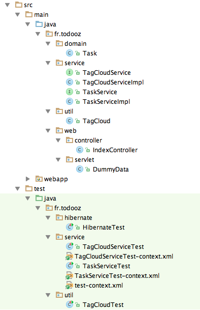

Spring MVC
Spring MVC
Si tout va bien, notre projet ressemble à la structure suivante.
Nous avons quasiment tous les éléments pour notre application, il nous reste à les assembler.
Contexte spring
Comme pour les tests unitaires, nous allons remplir un contexte spring avec nos beans.
Nous avons déjà un premier contexte pour nos controllers (spring-servlet.xml).
Pour les services, il est mieux d'en déclarer un second. Celui-ci va contenir nos services et la connexion à la base de données.
On commence par rajouter un appel dans le web.xml
<!-- Spring context -->
<listener>
<listener-class>org.springframework.web.context.ContextLoaderListener</listener-class>
</listener>
<context-param>
<param-name>contextConfigLocation</param-name>
<param-value>/WEB-INF/spring-context.xml</param-value>
</context-param>
Et le spring-context.xml dans WEB-INF correspondant :
<?xml version="1.0" encoding="UTF-8"?>
<beans xmlns="http://www.springframework.org/schema/beans"
xmlns:xsi="http://www.w3.org/2001/XMLSchema-instance"
xmlns:context="http://www.springframework.org/schema/context"
xmlns:tx="http://www.springframework.org/schema/tx"
xsi:schemaLocation="
http://www.springframework.org/schema/beans
http://www.springframework.org/schema/beans/spring-beans-3.0.xsd
http://www.springframework.org/schema/context
http://www.springframework.org/schema/context/spring-context-3.0.xsd
http://www.springframework.org/schema/tx
http://www.springframework.org/schema/tx/spring-tx-3.0.xsd" >
<bean class="fr.todooz.service.TaskServiceImpl" />
<bean class="fr.todooz.service.TagCloudServiceImpl" />
<!-- pool de connexion -->
<bean id="dataSource" class="org.apache.commons.dbcp.BasicDataSource" destroy-method="close">
<property name="driverClassName" value="org.apache.derby.jdbc.EmbeddedDriver"/>
<property name="url" value="jdbc:derby:target/taskdb;create=true"/>
<property name="username" value=""/>
<property name="password" value=""/>
</bean>
<!-- factory bean pour la SessionFactory hibernate -->
<bean id="sessionFactory" class="org.springframework.orm.hibernate4.LocalSessionFactoryBean">
<property name="dataSource" ref="dataSource" />
<property name="hibernateProperties">
<bean class="org.springframework.beans.factory.config.PropertiesFactoryBean">
<property name="properties">
<props>
<prop key="hibernate.dialect">org.hibernate.dialect.DerbyTenFiveDialect</prop>
<prop key="hibernate.hbm2ddl.auto">create-drop</prop>
</props>
</property>
</bean>
</property>
<property name="packagesToScan" value="fr.todooz.domain"/>
</bean>
<!-- ajoute un gestionnaire de transactions lié à la sessionFactory -->
<bean id="transactionManager" class="org.springframework.orm.hibernate4.HibernateTransactionManager">
<property name="sessionFactory" ref="sessionFactory"/>
</bean>
<!-- active le support des annotations @Transactional -->
<tx:annotation-driven transaction-manager="transactionManager"/>
</beans>
Nous avons : nos 2 services, une DataSource, la SessionFactory hibernate et un gestionnaire de transaction.
Pour une application réelle, nous n'utiliserions pas une base embarquée.
Nous utiliserions une url qui pointe vers la base comme par exemple : jdbc:mysql://host:3306/taskdb.
Component scan
Comme pour les controllers, il va être plus simple de remplacer les déclarations de services par un component scan.
<bean class="fr.todooz.service.TaskServiceImpl" /> <bean class="fr.todooz.service.TagCloudServiceImpl" /><!-- Découverte des services --> <context:component-scan base-package="fr.todooz.service"/>
Et les 2 implémentations des services doivent être annoté avec @Service
@Service public class TaskServiceImpl implements TaskService
Ainsi les services du package seront chargés dans le contexte spring au démarrage de l'application.
Bootstrap
Il est maintenant possible d'injecter un service dans le contrôleur et d'en profiter.
@Controller
public class IndexController {
@Inject
private TaskService taskService;
@RequestMapping({ "/", "/index" })
public String index(Model model) {
model.addAttribute("tasks", taskService.findAll());
return "index";
}
}
Désormais la page http://localhost:8080/ est un peu vide mais elle utilise bien le service.
On va donc remplir un peu la base au démarrage de l'application en attendant d'avoir un formulaire d'édition.
Dans la classe IndexController on rajoute une méthode bootstrap
@PostConstruct
public void bootstrap() {
}
@PostConstruct est une annotation standard qui demande au conteneur d'appeler la méthode.
L'appel est fait après injection des dépendances.
L'alter ego de @PostConstruct est @PreDestroy, appelé juste avant la destruction du composant.
En utilisant le TaskService, implémentez le pseudo code suivant :
if (pas de tâche) {
créer 3 tâches différentes
}
En jouant un peu avec cette méthode, il est possible d'avoir un peu de richesse sur la page de home.